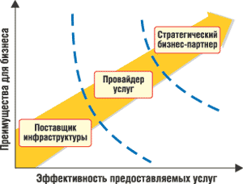

Андрей Колесов
Тема повышения эффективности управления ИТ-услугами в последнее время все чаще присутствует на страницах отечественной профессиональной ИТ-прессы и на различных мероприятиях. Термины ITSM (IT Service Management) и ITIL (IT Infrastrucrure Library), еще полтора-два года назад казавшиеся загадочными и далекими от нашей жизни, сегодня стали вполне узнаваемыми. Эксперты единодушно уверяют, что как раз сейчас, после этапа опробования методов ITSM рядом крупных заказчиков, нас ждет вторая волна массового внедрения этих технологий, в том числе на уровне средних и даже малых предприятий.
Такой прогноз представляется вполне очевидным. Ведь рост значимости ИТ для успешного ведения основного бизнеса компаний имеет своим следствием тот факт, что затраты на поддержку и развитие информационных систем постоянно растут и доля их в общей структуре расходов предприятий постоянно увеличивается. Более того, по мере роста сложности и повышения ответственности на передний план все больше выходит третья составляющая корпоративных информационных систем, связанная с обслуживанием первых двух - аппаратных и программных компонентов. Определяется это в первую очередь тем, что доля затрат на обслуживание в общем бюджете ИТ-отделов растет, а самое главное - именно тот самый "человеческий фактор" начинает играть решающую роль в деле повышения эффективности и надежности ИС в целом. В результате перед организациями встает очень непростая проблема повышения качества ИТ-обслуживания при одновременном сокращении затрат на этот вид деятельности. Более того, эта задача часто попадает напрямую в поле зрения руководства предприятия, так как ее решение в значительной степени связано с организационными аспектами управления.
В результате сегодня мы можем наблюдать растущий интерес российских заказчиков к использованию идей ITSM. Однако при ближайшем рассмотрении обнаруживается, что далеко не все ИТ-специалисты и руководители хорошо представляют себе, что же скрывается за этими понятиями и - самое главное - как на практике начать внедрение современных моделей управления ИТ-инфраструктурой.
Что мы знаем об ITSMВ представлении даже "продвинутых" ИТ-специалистов применение современных методов ITSM чаще всего ассоциируется с необходимостью внедрения дорогостоящих программных решений для управления ИТ-инфраструктурой - таких как HP OpenView и IBM Tivoli, т. е. доступных только крупным заказчикам. Действительно, управление ИТ-услугами - это составная часть более общей проблемы управления ИТ-ресурсами предприятия, и эти вопросы желательно рассматривать в комплексе. Однако в общем случае внедрение ITSM совсем не связано с жесткой необходимостью дорогостоящего ПО. Вполне возможен (и даже более правилен) поэтапный подход к автоматизации процессов управления, начиная с наиболее актуальных. При этом вполне вероятно, что лучше окажется приобретать не отдельные компоненты некоторого более многофункционального ПО, а специализированные и, наверное, более дешевые решения. Строго говоря, внедрение ITSM вообще не связано с обязательной покупкой ПО. ITSM - это в первую очередь новая организация ИТ-службы, а ПО - это лишь инструмент поддержки и эффективной реализации соответствующей методологии. Многих заказчиков пугает тот факт, что методика ITSM изложена в ITIL - наборе из семи книг на английском языке. Из этого они делают вывод, что изучение, а тем более внедрение этих рекомендаций - дело очень сложное, которое может нарушить работу существующей системы ИТ-услуг с не очень понятным итоговым результатом. Но такие представления неверны! Да, ITIL действительно состоит из семи книг, но в них изложен комплекс вопросов по всем аспектам управления ИТ-ресурсами предприятия (см. врезку "Рекомендации ITIL"). Собственно, тема ИТ-услуг представлена в двух книгах, более того, их рекомендации можно внедрять поэтапно, по отдельным операциям, отраженным в разных разделах книг. Собственно ITIL содержит рекомендации настолько общего характера, что для их практической реализации нужна серьезная адаптация к конкретным условиям. Именно поэтому ИТ-компании, занимающиеся продвижением средств ITSM, разрабатывают собственные методики-рекомендации (на основе ITIL), с более четкой и понятной направленностью. Например, HP разработала собственный вариант методологии управления ИТ-услугами, получившей название "Типовой модели HP ITSM" (IT Service Management Reference Model), которая представлена сегодня версией 3.0. Аналогичная методика в исполнении Microsoft называется Microsoft Operations Framework. Подобные рекомендации имеют в своем арсенале многие ИТ-компании (в том числе и российские), они представлены также в статьях и книгах независимых авторов.
|
Новые подходы к старым проблемам
Проблема управления ИТ-ресурсами и повышения эффективности ИТ-услуг стара, как и само применение этих ресурсов и услуг. Поэтому сейчас, говоря об ITSM, мы имеем в виду новые концептуальные подходы к решению тех вопросов, которые были на теоретическом уровне сформулированы 20 лет назад и оказались реально востребованы фактически только сейчас, в начале нового столетия (см. врезки).
Ключевая идея ITSM в современном ее понимании заключается в необходимости перехода от традиционной модели, где главная цель - это собственно поддержка ИТ-инфраструктуры, к схеме, ориентированной на обслуживание основного бизнеса компании (рис. 1). Решение такой задачи осложняется тем, что для этого потребуется довольно радикально пересмотреть общее позиционирование сервисных ИТ-подразделений в структуре компаний. И тут нужно обратить внимание на две стороны данного вопроса.
Во-первых, ИТ-инфраструктура предприятий зачастую формировалась весьма хаотичным образом, оперативно отвечая на те или иные запросы со стороны основного бизнеса. В результате ИТ-службы обычно представляют собой весьма запутанную структуру, как с технической, так и экономической точки зрения.
Во-вторых, ИТ-департаменты исторически рассматриваются как вспомогательные, сугубо бюджетные подразделения. А это означает (точнее, из этого следует), что руководство компаний не может четко выявить взаимосвязь между инвестициями в развитие и поддержку ИС и повышением эффективности основного бизнеса.
| Рис. 1. Эволюция технологий управления ИТ-инфраструктурой.
|
Повышение интереса к концепции ITSM в значительной степени определялось также экономическим кризисом начала нынешнего века, когда во многих компаниях - довольно неожиданно для себя - наряду с дефицитом выделяемых им бюджетов стали ощущать новые требования со стороны руководства в виде необходимости предоставления отчетов по расходам и сведений об ожидаемой прибыли от инвестиций в ИТ-ресурсы. Это подтверждается целым рядом исследований по всему миру. Их результаты говорят также о том, что ИТ-менеджеры не всегда могут четко определить, какие преимущества получают внутренние или внешние клиенты ИТ-подразделений от той или иной услуги.
По оценкам Meta Group, ситуация на рынке такова, что около 75% ИТ-подразделений сегодня выступает в роли не более чем поставщиков инфраструктуры, ориентированных исключительно на ее технологическое развитие вне связи с деятельностью предприятий в целом. В то же время компании хотят пользоваться экономически эффективными ИТ-услугами, отвечающими их индивидуальным потребностям и способными помочь им в решении ключевых бизнес-задач. Поэтому ИТ-департаменты должны предпринять усилия и сделать шаг вперед, который позволит им стать не просто поставщиками ИТ-инфраструктуры, а настоящими сервис-провайдерами, а затем и стратегическими партнерами руководства компаний, предоставляющими широкий спектр услуг, эффективность которых поддается достаточно простой оценке со стороны их потребителей.
Meta Group считает, что во всем мире только 25% компаний приступило к внедрению сервисной модели обслуживания и лишь 5% из них удалось вырасти до того уровня (по состоянию на 2003 г.), когда ИТ-подразделение становится для своей компании ценным стратегическим ресурсом. Однако по прогнозам, приведенным в том же отчете, в ближайшие три года такой переход сможет осуществить подавляющее большинство ИТ-подразделений крупных и даже средних компаний.
По сути дела, концепция ITSM полностью соответствует общей нацеленности заказчиков на более широкое использование ИТ-аутсорсинга, в том числе и в сфере услуг. Таким образом, задачей ИТ-подразделений становится применение модели аутсорсинга на внутреннем уровне своей организации (рис. 2). И в этой связи аналитики предупреждают: тех, кому не удастся успешно реализовать новые принципы работы, скорее всего ждет расформирование, а их функции будут возложены на внешние специализированные организации.
|  | Рис. 2. Эволюция ИТ-подразделений предприятий (по версии Meta Group).
|
Спрос и предложение в России
Нужно сказать, что отечественные системные интеграторы уже накопили значительный опыт реализации подобных проектов и расширяют спектр своих предложений. Эту ситуацию хорошо отразила конференция "Управление ИТ-услугами на предприятии: от технологической ориентации - к эффективному обслуживанию бизнеса", проведенная в Москве в начале июня исследовательской компанией IDC и издательством "Открытые системы".
О своем видении проблематики рассказали на конференции специалисты ряда ведущих российских компаний - системных интеграторов. На ней рассматривались вопросы практической реализации ITSM, возможности внедрения сервис-ориентированной модели собственными силами или с помощью внешних консультантов, риски, связанные с переходом от традиционной схемы обслуживания и т. п.
Весьма показательно, что если еще год назад в качестве программных средств ITSM фигурировали лишь инструменты HP OpenView, IBM Tivoli и Computer Associates Unicenter, то сейчас почти все системные интеграторы предлагают в дополнение к ним специализированные решения других западных разработчиков (в частности, компаний Altiris, Vytek и Westbury). Однако заметно было и то, что пока основная проблематика ITSM ограничивается кругом вопросов технической поддержки (service support) и что российские заказчики только подходят к решению оценки качества и экономической эффективности ИТ-услуг (service delivery).
В то же время нужно отметить определенную ограниченность представления темы ITSM на этой конференции. Нетрудно видеть, что на ней были представлены интересы ведущих отечественных интеграторов, работающих преимущественно с крупными заказчиками и предлагающих программные решения в ценовом диапазоне от 20 до 50 тыс. долл. Но как раз в последнее время в нашей стране повышается интерес к ITSM со стороны среднего и даже малого бизнеса, которые хотели бы использовать у себя более дешевые программные продукты для решения первоочередных задач повышения эффективности ИТ-обслуживания. Спрос рождает предложение, и сейчас на нашем рынке уже имеется несколько "облегченных" продуктов (стоимостью до 10 тыс. долл.) российских разработчиков. К сожалению, о самом существовании этой категории решений на прошедшем мероприятии даже не упоминалось, и в данной статье мы постараемся восполнить этот пробел.
Российские разработки для ITSM
Astrosoft HelpDesk 2.0
"Астрософт", http://www.astrosoft.ru
Продукт предназначен для обработки заявок пользователей и автоматизирует процесс "Управление инцидентами" (Incident Management). Механизм обработки для любой роли достаточно стандартен, интуитивно понятен, но система потребует определенных усилий при инсталляции и администрировании. В качестве клиента используется Internet Explorer, поэтому дополнительного ПО не требуется. По сути это система класса trouble-ticket, реализованная на серьезной платформе (Microsoft). Ее очевидное достоинство - возможная интеграция с технологиями Microsoft (наиболее интересный вариант - с Systems Management Server), а также с программными продуктами "Астрософт" для управления предприятием "АстроСофт: Деловое Досье. Оборудование" и "АстроСофт: Управление ресурсами", разработанными на платформе "1С:Предприятие". Еще один плюс - поставка продукта в открытых кодах.
Crechet HelpDesk 2.0
"Кречет", http://www.crechet.ru
Первая версия продукта базировалась на Web-интерфейсе, предназначена для автоматизации "Управления инцидентами" (Incident Management). В новом варианте существует простая реализация каталога услуг, т. е. появился новый процесс "Управление уровнем сервиса" (Service Level Management), хотя пока в нем отсутствует отчетность, характерная для этого процесса. Другие изменения и дополнения: терминология приведена в соответствие с ITIL, добавлена возможность присоединения сообщений "Инженер-Пользователь", "Инженер-Оператор" к инциденту, реализована возможность разрешения инцидента оператором без эскалации его к координаторам. Отдельно стоит упомянуть такую важную возможность, как синхронизация базы данных пользователей Helpdesk с Microsoft Active Directory.
"ИнфраМенеджер" 4.1
"Софтинтегро", http://www.softintegro.ru
Изначально представляла собой систему учета сетевого и прочего оборудования, частично реализовано "Управление активами" (Configuration Management). Впоследствии был добавлен модуль HelpDesk, автоматизирующий "Управление инцидентами" (Incident Management) и "Управление проблемами" (Problem Management). Продукт интегрирован с генератором отчетов Crystal Reports и обеспечивает синхронизацию данных о пользователях с Active Directory. Представляет собой хорошее решение для организаций с развитой сетевой инфраструктурой, есть возможность интеграции со средствами автоматического аудита и мониторинга. Осенью 2005 г. должна выйти версия 4.2, в которой будут расширены возможности визуализации информации и интеграции с решениями третьих фирм. Появится также новый модуль - "Управление программным обеспечением".
Naumen Service Desk
Naumen, http://www.naumen.ru
Автоматизированы процессы "Управление инцидентами", "Управление уровнем сервиса", "Управление проблемами". Система полностью реализована при помощи Web-интерфейса, содержит модули финансового учета (сервисный бюджет, расчет стоимости услуг по трудозатратам). Дополнительные модули обеспечивают процессы "Управление конфигурациями" и "Управление изменениями". Система с открытым кодом, однако выбранный способ реализации - на базе языка Python, что значительно увеличивает стоимость владения системой. Достоинство продукта - возможная интеграция с другими решениями фирмы Naumen: CRM (управление отношениями с клиентами) и NauDoc (управление бизнес-процессами и документооборотом).
Desnol Service Desk Tool
"Деснол Софт", http://www.desnolsoft.ru
В системе реализованы процессы "Управление инцидентами", "Управление уровнем сервиса" и "Управление проблемами". Есть возможность формирования отчетности по ключевым параметрам (KPI) "Управления инцидентами", а также финансовой и оперативной отчетности по процессу SLM. Плюс этой системы - возможность интеграции с существующими Web-сайтами и Web-приложениями. Система выполнена в открытых кодах на базе широко распространенной платформы "1С:Предприятие 8.0". В стандартную поставку продукта включен компонент "1С:Web-расширение", что позволяет организовать доступ к функциям системы через Web-интерфейс для неограниченного количества пользователей, в том числе и для тех, у которых на компьютерах не установлено "1С:Предприятие".
Краткое резюме
К сожалению, российский рынок Service Desk на текущий момент не предлагает широкого выбора ITSM-систем, но на нем за последние пару лет сформировалась группа разработчиков и консультантов, нацеленных на данный сегмент рынка. Поэтому есть все основания полагать, что разнообразие предложений будет расти по мере повышения спроса со стороны заказчиков.
На сегодняшний момент заказчикам при выборе продукта можно дать следующие рекомендации:
- если не ведется и не предполагается внедрение процесса "Управление уровнем сервиса", выбирать стоит между Astrosoft HelpDesk и Crechet HelpDesk;
- если предприятию требуется управление развитой сетевой инфраструктурой, а также предполагается внедрение службы Help Desk, то стоит обратить внимание на продукт "ИнфраМенеджер";
- если предполагается внедрение процесса "Управление уровнем сервиса", то выбирать лучше среди Naumen Service Desk и Desnol Service Desk Tool.
Впрочем, не стоит упускать из вида и универсальную возможность реализации системы своими силами или "под заказ" у стороннего подрядчика, в соответствии с собственным видением проблемы.
В заключение стоит отметить еще одну важную тенденцию, которая отражает растущую зрелость российских предприятий: на смену брэндам ПО идет повышение значимости ИТ-консалтинга. Если раньше клиенты покупали софт, а потом думали, как его внедрить, то сейчас заказчики занимаются поиском хороших консультантов, которые предлагают решение на базе тех или иных продуктов.
Рекомендации ITILБиблиотека инфраструктуры информационных технологий (IT Infrastructure Library, ITIL) - общепризнанный стандарт де-факто для управления техническим обслуживанием информационных систем (IT Service Management, ITSM). Разработка ITIL была начата еще в 80-х годах прошлого столетия по инициативе правительства Великобритании. В разгар серьезного экономического спада того времени государство уже тогда поняло значимость снижения стоимости и повышения эффективности работ по обслуживанию ИТ-инфраструктуры. Реализация проекта была возложена на специальное агентство (British Central Computer & Telecommunications Agency, CCTA), в котором была создана команда, включавшая консультантов, а также представителей ИТ-поставщиков и пользователей, чьей задачей было обобщение передового опыта в данной области. В ходе этой работы была выпущена серия из сорока книг, использующая общий словарь терминов. Позднее, в 1989 г., эти издания были несколько переработаны и изданы в виде семи томов, получивших название ITIL. Согласно ITIL, ITSM направлено на предоставление и поддержку ИТ-обслуживания, которое должно соответствовать бизнес-требованиям организаций. ITIL включает всеобъемлющий, последовательный и непротиворечивый набор лучших практик в области ITSM, предлагая путь к повышению эффективности использования ИС и основного бизнеса компаний в целом. В настоящее время стандарты ITIL поддерживаются и пропагандируются общественным форумом IT Service Management Forum (ITSMF), объединяющим различные организации и компании, заинтересованные в повышении качестве ИТ-сервиса. Кроме того, многие консультационные и обучающие фирмы по всему миру предлагают услуги по тренингу и сертификации ИТ-профессионалов в области ITSM. Рекомендации ITIL записаны только на английском языке. Официальных переводов на другие языки не делается, так как очень сложно обеспечить адекватное воспроизведение терминологии. Неофициальные переводы, в том числе на русский, имеются, но следует иметь в виду, что ITSMF не несет ответственности за них. Семь книг, составляющих ITIL, перечислены ниже. Service Delivery (предоставление услуг). Описание типов ИТ-услуг, предоставляемых основным подразделениям предприятия. Service Support (техническая поддержка). Описание конкретных способов доступа пользователей к получению нужных им услуг. Information & Computing Technology Infrastructure Management (управление ИТ-инфраструктурой). Общее описание методики организации работы ИТ-службы по управлению инфраструктурой информационной системы компании. Application Management (управление приложениями). Описание общего жизненного цикла приложений (разработка, внедрение, сопровождение) с точки зрения соответствия ПО изменяющимся потребностям предприятия. The Business Perspective (бизнес-перспектива). Рекомендации для понимания того, как работа ИТ-подразделения может влиять на эффективность бизнеса компании в целом. Planning to Implement Service Management (планирование внедрения управления услугами). Рассматриваются проблемы и задачи планирования, реализации и развития ITSM, необходимые для реализации поставленных целей, включая культурные, психологические и организационные аспекты. Security Management (управление безопасностью). Рассматриваются проблемы разграничения доступа к информации и ИТ-сервисам (как пользователей, так и обслуживающего персонала), особенности оценки, управления и противодействия рискам, инциденты, связанные с нарушением безопасности, и способы реакции на них. Если говорить о внедрении ITIL как о поэтапном процессе, то решение первоочередных задач ITSM связано с рекомендациями, сформулированными в первых двух книгах, в которые входят следующие основные разделы - Service Support и Service Delivery. В таблице коротко охарактеризованы задачи, рекомендации по решению которых содержатся в этих разделах. Содержание основных разделов первых двух книг ITIL
|
||||||||||||||||||||||||||||